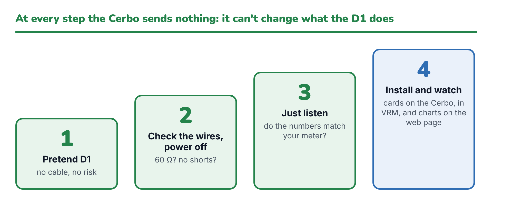

The monitor only listens: it has no way to send the D1 anything, so no step here can change what the D1 does. The risks are the usual ones of working near batteries, and a wiring mistake. Each stage checks one thing before the next. Stop at the first thing that looks wrong.

docs/installation-guide.pdf) at hand| Stage | What | Risk |
|---|---|---|
| 1 | Simulation on the Cerbo | None: no converter, no CAN bus |
| 2 | Wiring check, everything off | None: no power |
| 3 | Listen | None: the Cerbo sends nothing |
| 4 | Installed and watching for a day | None: the Cerbo sends nothing |
In Cerbo Setup, choose 9. The real monitor runs on your Cerbo against a pretend D1, and no CAN socket is ever opened. A real installation keeps running beside it.
| Check | OK |
|---|---|
| "DC-DC D1 (SIMULATED)" cards appear in the Cerbo's switch pane, and in VRM's Switches | |
| Its web page opens at http://<Cerbo IP>:8089, and the charts start filling after a minute | |
| The pretend 12 V side drains to 12.5 V, then Status shows Autonomous and it charges back to about 13.4 V (12 V side current +, 48 V side −) | |
| Every three minutes a pretend alternator pushes the 12 V side above 13.5 V and the pretend D1 boosts (12 V side current −, 48 V side +) until 12.3 V |
Stop with Ctrl+C. The simulated cards disappear. The pretend D1 follows the manual's logic, but it can't tell you anything about the real one.
| Check | OK |
|---|---|
| Continuity: RJ45 pin 7 to white/brown, pin 8 to brown, pin 3 to white/green (guide step 2b) | |
| No continuity (no beep) between any of the three network-cable wires and LV+ or HV+ | |
| CAN ground (white/green) to the D1 GND terminal: beeps | |
| RJ45 not in the Cerbo: white/brown to brown reads about 120 Ω (your resistor at the D1) | |
| RJ45 in the Cerbo, with the VE.Can terminator in the other socket: about 60 Ω |
Power the D1 as normal (KL30 and KL15 on). In Cerbo Setup choose 2 (find), then 3 (watch).
| Check | What you saw | OK |
|---|---|---|
| Converter found, at the right speed (if it reports bus errors, switch speed as the guide says) | ||
| 12 V side reading within about 0.2 V of your meter on the D1's LV+ to GND | ||
| 48 V side reading within about 0.5 V of your meter on HV+ to GND | ||
| While the D1 is converting: which side shows + current? Check with the clamp meter which way the current really flows | ||
| No alarms, or only alarms that make sense (for example low voltage when the battery really is low) |
Choose 4 (install). Leave it running for a day.
| Check | OK |
|---|---|
| Three cards on the Cerbo, in VRM and on the web page, with sensible readings | |
| The web page's charts cover the day, with no gaps you can't explain (a gap means the D1 went quiet, or the Cerbo restarted) | |
| The D1 behaves exactly as before: buck when the 12 V side is low, boost when it's high, standby otherwise | |
| After a Cerbo reboot the monitor comes back by itself (option 5 shows "Converter online") |
Tested and signed off by: Date: